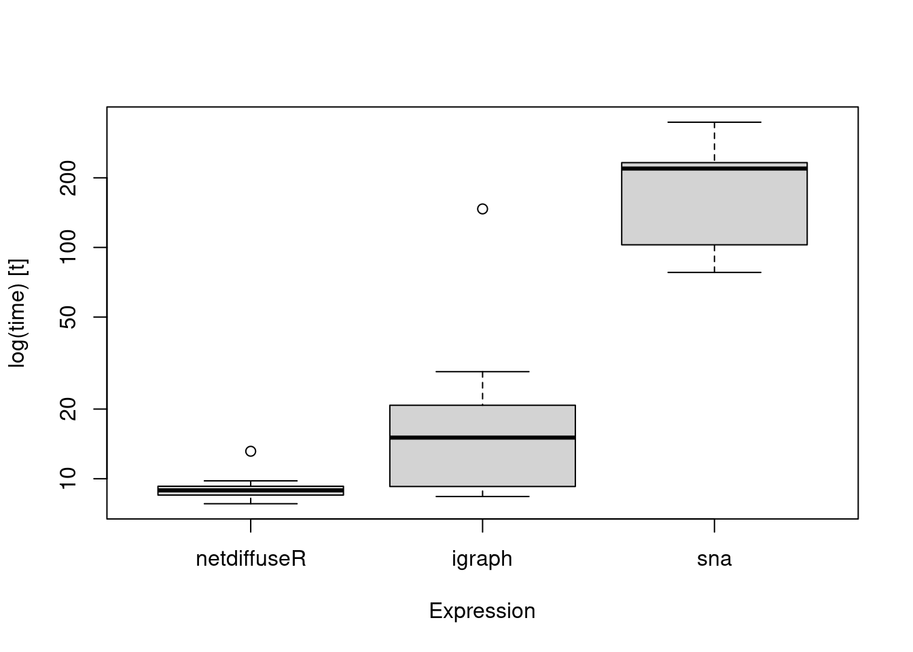
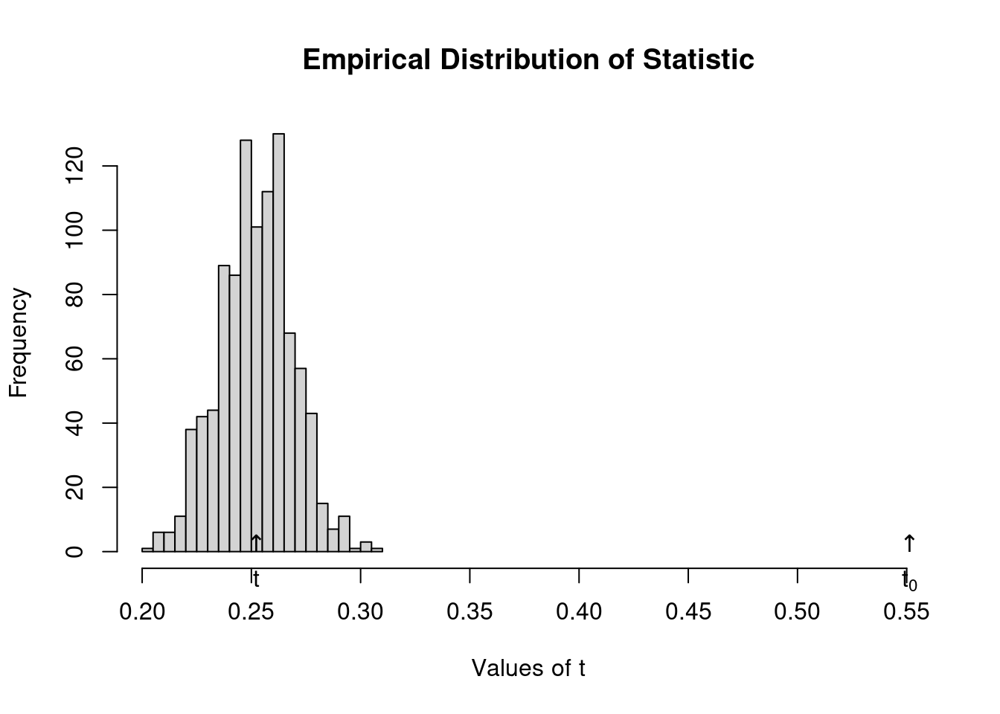
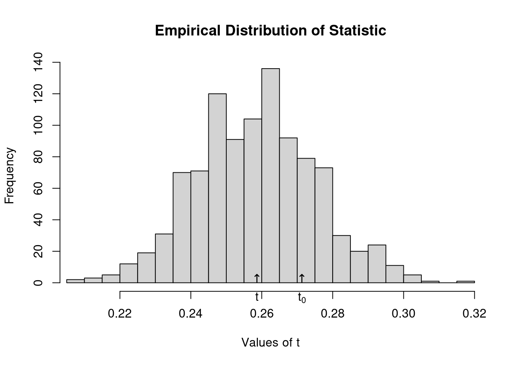

12.4 Statistical inference
12.4.1 Moran’s I
Moran’s I tests for spatial autocorrelation.
netdiffuseR implements the test in
moran, which is suited for sparse matrices.We can use Moran’s I as a first look to whether there is something happening: let that be influence or homophily.
12.4.2 Using geodesics
One approach is to use the geodesic (shortest path length) matrix to account for indirect influence.
In the case of sparse matrices, and furthermore, in the presence of structural holes it is more convenient to calculate the distance matrix taking this into account.
netdiffuseR has a function to do so, the
approx_geodesicfunction, which, using graph powers, computes the shortest path up tonsteps. This could be faster (if you only care up tonsteps) thanigraphorsns:# Extracting the large adjacency matrix (stacked) dgc <- diag_expand(medInnovationsDiffNet$graph) ig <- igraph::graph_from_adjacency_matrix(dgc) mat <- network::as.network(as.matrix(dgc)) # Measuring times times <- microbenchmark::microbenchmark( netdiffuseR = netdiffuseR::approx_geodesic(dgc), igraph = igraph::distances(ig), sna = sna::geodist(mat), times = 50, unit="ms" )
The
summary.diffnetmethod already runs Moran’s for you. What happens under the hood is:# For each time point we compute the geodesic distances matrix W <- approx_geodesic(medInnovationsDiffNet$graph[[1]]) # We get the element-wise inverse W@x <- 1/W@x # And then compute moran moran(medInnovationsDiffNet$cumadopt[,1], W)## $observed ## [1] 0.06624028 ## ## $expected ## [1] -0.008064516 ## ## $sd ## [1] 0.03265066 ## ## $p.value ## [1] 0.02286087 ## ## attr(,"class") ## [1] "diffnet_moran"
12.4.3 Structural dependence and permutation tests
- A novel statistical method (work-in-progress) that allows conducting inference.
- Included in the package, tests whether a particular network statistic depends on network structure
- Suitable to be applied to network thresholds (you can’t use thresholds in regression-like models!)
12.4.4 Idea
Let \(\mathcal{G} = (V,E)\) be a graph, \(\gamma\) a vertex attribute, and \(\beta = f(\gamma,\mathcal{G})\), then
\[\gamma \perp \mathcal{G} \implies \mathbb{E}\left[\beta(\gamma,\mathcal{G})|\mathcal{G}\right] = \mathbb{E}\left[\beta(\gamma,\mathcal{G})\right]\]
This is, if for example time of adoption is independent on the structure of the network, then the average threshold level will be independent from the network structure as well.
Another way of looking at this is that the test will allow us to see how probable is to have this combination of network structure and network threshold (if it is uncommon then we say that the diffusion model is highly likely)
12.4.4.1 Example Not random TOA
To use this test, __netdiffuseR__ has the `struct_test` function.It simulates networks with the same density, and computes a particular statistic every time, generating an EDF (Empirical Distribution Function) under the Null hypothesis (p-values).## Warning in (function (graph, p, algorithm = "endpoints", both.ends = FALSE, : ## The option -copy.first- is set to TRUE. In this case, the first graph will be ## treated as a baseline, and thus, networks after T=1 will be replaced with T-1.# Running the test test <- struct_test( graph = net, statistic = function(x) mean(threshold(x), na.rm = TRUE), R = 1e3, ncpus=4, parallel="multicore" )## Warning in (function (graph, p, algorithm = "endpoints", both.ends = FALSE, : ## The option -copy.first- is set to TRUE. In this case, the first graph will be ## treated as a baseline, and thus, networks after T=1 will be replaced with T-1.## ## Structure dependence test ## # Simulations : 1,000 ## # nodes : 500 ## # of time periods : 10 ## -------------------------------------------------------------------------------- ## H0: E[beta(Y,G)|G] - E[beta(Y,G)] = 0 (no structure dependency) ## observed expected p.val ## 0.5513 0.2523 0.0000

Now we shuffle times of adoption, so that is random
# Resetting TOAs (now will be completely random) diffnet.toa(net) <- sample(diffnet.toa(net), nnodes(net), TRUE) # Running the test test <- struct_test( graph = net, statistic = function(x) mean(threshold(x), na.rm = TRUE), R = 1e3, ncpus=4, parallel="multicore" )## Warning in (function (graph, p, algorithm = "endpoints", both.ends = FALSE, : ## The option -copy.first- is set to TRUE. In this case, the first graph will be ## treated as a baseline, and thus, networks after T=1 will be replaced with T-1.## ## Structure dependence test ## # Simulations : 1,000 ## # nodes : 500 ## # of time periods : 10 ## -------------------------------------------------------------------------------- ## H0: E[beta(Y,G)|G] - E[beta(Y,G)] = 0 (no structure dependency) ## observed expected p.val ## 0.2714 0.2586 0.4220
12.4.5 Regression analysis
In regression analysis, we want to see if exposure, once we control for other covariates had any effect on the adoption of a behavior.
In general, the big problem here is when we have a latent variable that co-determines both network and behavior.
Unless we can control for such variable, regression analysis will be generically biased.
On the other hand, if you can claim that either such variable doesn’t exist or you actually can control for it, then we have two options: lagged exposure models or contemporaneous exposure models. We will focus on the former.
12.4.5.1 Lagged exposure models
In this type of model, we usually have the following
\[ y_t = f(W_{t-1}, y_{t-1}, X_i) + \varepsilon \]
Furthermore, in the case of adoption, we have
\[ y_{it} = \left\{ \begin{array}{ll} 1 & \mbox{if}\quad \rho\sum_{j\neq i}\frac{W_{ijt-1}y_{it-1}}{\sum_{j\neq i}W_{ijt-1}} + X_{it}\beta > 0\\ 0 & \mbox{otherwise} \end{array} \right. \]
In netdiffuseR is as easy as doing the following:
# fakedata set.seed(121) W <- rgraph_ws(1e3, 8, .2) X <- cbind(var1 = rnorm(1e3)) toa <- sample(c(NA,1:5), 1e3, TRUE) dn <- new_diffnet(W, toa=toa, vertex.static.attrs = X)## Warning in new_diffnet(W, toa = toa, vertex.static.attrs = X): -graph- is ## static and will be recycled (see ?new_diffnet).# Computing exposure and adoption for regression dn[["cohesive_expo"]] <- cbind(NA, exposure(dn)[,-nslices(dn)]) dn[["adopt"]] <- dn$cumadopt # Generating the data and running the model dat <- as.data.frame(dn) ans <- glm(adopt ~ cohesive_expo + var1 + factor(per), data = dat, family = binomial(link="probit"), subset = is.na(toa) | (per <= toa)) summary(ans)## ## Call: ## glm(formula = adopt ~ cohesive_expo + var1 + factor(per), family = binomial(link = "probit"), ## data = dat, subset = is.na(toa) | (per <= toa)) ## ## Coefficients: ## Estimate Std. Error z value Pr(>|z|) ## (Intercept) -0.92777 0.05840 -15.888 < 2e-16 *** ## cohesive_expo 0.23839 0.17514 1.361 0.173452 ## var1 -0.04623 0.02704 -1.710 0.087334 . ## factor(per)3 0.29313 0.07715 3.799 0.000145 *** ## factor(per)4 0.33902 0.09897 3.425 0.000614 *** ## factor(per)5 0.59851 0.12193 4.909 9.18e-07 *** ## --- ## Signif. codes: 0 '***' 0.001 '**' 0.01 '*' 0.05 '.' 0.1 ' ' 1 ## ## (Dispersion parameter for binomial family taken to be 1) ## ## Null deviance: 2745.1 on 2317 degrees of freedom ## Residual deviance: 2663.5 on 2312 degrees of freedom ## (1000 observations deleted due to missingness) ## AIC: 2675.5 ## ## Number of Fisher Scoring iterations: 4Alternatively, we could have used the new function
diffreg## ## Call: ## glm(formula = Adopt ~ exposure + var1 + factor(per), family = binomial(link = "probit"), ## data = dat, subset = ifelse(is.na(toa), TRUE, toa >= per)) ## ## Coefficients: ## Estimate Std. Error z value Pr(>|z|) ## (Intercept) -0.92777 0.05840 -15.888 < 2e-16 *** ## exposure 0.23839 0.17514 1.361 0.173452 ## var1 -0.04623 0.02704 -1.710 0.087334 . ## factor(per)3 0.29313 0.07715 3.799 0.000145 *** ## factor(per)4 0.33902 0.09897 3.425 0.000614 *** ## factor(per)5 0.59851 0.12193 4.909 9.18e-07 *** ## --- ## Signif. codes: 0 '***' 0.001 '**' 0.01 '*' 0.05 '.' 0.1 ' ' 1 ## ## (Dispersion parameter for binomial family taken to be 1) ## ## Null deviance: 2745.1 on 2317 degrees of freedom ## Residual deviance: 2663.5 on 2312 degrees of freedom ## (1000 observations deleted due to missingness) ## AIC: 2675.5 ## ## Number of Fisher Scoring iterations: 4
12.4.5.2 Contemporaneous exposure models
Similar to the lagged exposure models, we usually have the following
\[ y_t = f(W_t, y_t, X_t) + \varepsilon \]
Furthermore, in the case of adoption, we have
\[ y_{it} = \left\{ \begin{array}{ll} 1 & \mbox{if}\quad \rho\sum_{j\neq i}\frac{W_{ijt}y_{it}}{\sum_{j\neq i}W_{ijt}} + X_{it}\beta > 0\\ 0 & \mbox{otherwise} \end{array} \right. \]
Unfortunately, since \(y_t\) is in both sides of the equation, this models cannot be fitted using a standard probit or logit regression.
Two alternatives to solve this:
Using Instrumental Variables Probit (ivprobit in both R and Stata)
Use a Spatial Autoregressive (SAR) Probit (SpatialProbit and ProbitSpatial in R).
We won’t cover these here.
12.4.6 Problems
Using the dataset stats.rda:
Compute Moran’s I as the function
summary.diffnetdoes. For this you’ll need to use the functiontoa_mat(which calculates the cumulative adoption matrix), andapprox_geodesic(which computes the geodesic matrix). (see?summary.diffnetfor more details).Read the data as diffnet object, and fit the following logit model \(adopt = Exposure*\gamma + Measure*\beta + \varepsilon\). What happens if you exclude the time-fixed effects?